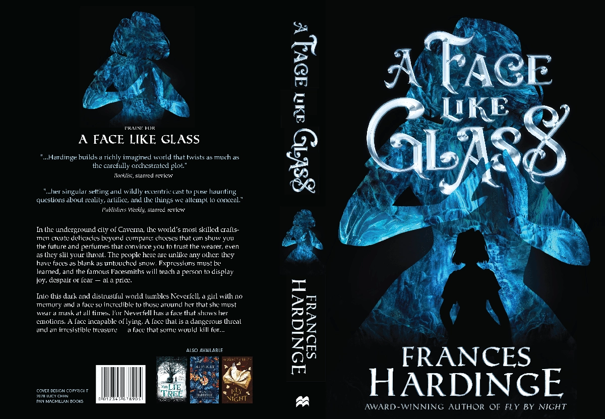
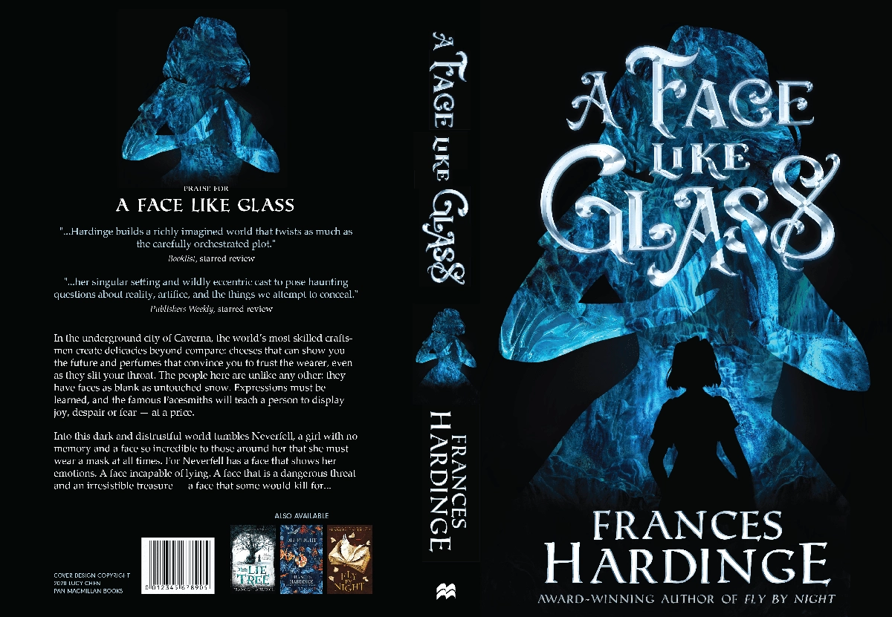

A Face Like Glass by Frances Hardinge
This cover emphasizes the setting of the book, in the caves of Caverna. Fraces Hardinge describes Caverna as an entity with thought and ambitions to keep the main character contained. The lettering and texture of the cover reflects the title "A Face like Glass" with a glass-like sheen.
Project info
2021-22
This cover emphasizes the setting of the book, in the caves of Caverna. Fraces Hardinge describes Caverna as an entity with thought and ambitions to keep the main character contained. The lettering and texture of the cover reflects the title "A Face like Glass" with a glass-like sheen.
Project info
2021-22
 
